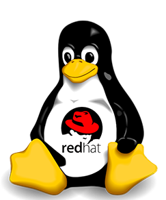
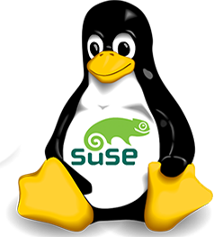

Sistema operativo de código abierto
Linux es la denominación técnica y generalizada que reciben una serie de sistemas
operativos de tipo Unix, que también suelen ser de código abierto, multiplataforma,
multiusuario y multitarea.
¿Quién fue su fundador?
Linus Benedict Torvalds.
Helsinki, Finlandia, 28 de diciembre de 1969.
Ingeniero de software Finlandés-estadounidense.
Creador del desarrollo del kernel (en español, núcleo) Linux.
En 1991, mientras estudiaba ciencias de la computación en la
Universidad de Helsinki (M.S., 1996), compró su primera computadora
personal (PC). Sin embargo, no estaba satisfecho con el sistema
operativo (SO) de la computadora.
Su PC usaba MS-DOS (el sistema operativo de disco de Microsoft
Corp.), pero Torvalds prefería el sistema operativo UNIX que había
usado en las computadoras de la universidad.
Decidió crear su propia versión de UNIX basada en PC. Los meses de
trabajo de programación determinado dieron los inicios de un sistema
operativo conocido como Linux.
kernel - núcleo
definición
El núcleo o kernel es la parte central del sistema operativo y se encarga de
realizar toda la comunicación segura entre el software y el hardware del
ordenador.
Permitiendo la comunicación entre el software y los dispositivos físicos de un
ordenador, tanto el hardware interno como la placa base, procesador, memoria y
unidades de almacenamiento.
ventajas
El núcleo debe hacer una gestión de la memoria RAM dividiéndola entre distintos
servicios y aplicaciones , ya que un sistema operativo actual es ‘multitarea’, por lo
que se ejecutan al mismo tiempo varias aplicaciones, al igual que la memoria, el
procesador también debe ser gestionado por el núcleo.
Una de las ventajas que tiene el kernel de Linux es que puede dividir las tareas
del ordenador entre todos los ncleos de la CPU, y es posible actualizarlo sin que
afecte al resto del sistema operativo, con un par de comandos mediante la
terminal del Centro de Software, teniendo un equipo más estable y seguro.
Núcleo de Linux vs Núcleo de Windows
Aunque Windows también posee su propio kernel, hay una diferencia
fundamental entre este y el de Linux. Mientras que el núcleo de Windows es
completamente hermético y nadie puede modificarlo, el de Linux es de código
abierto, por lo que cualquiera puede hacerles las modificaciones que quiera, esto
permite que existan distintas distribuciones de Linux.
distribuciones
GNU/Linux es una distribución de software basada en el núcleo Linux
que incluye determinados paquetes de software para satisfacer las
necesidades de un grupo específico de usuarios, dando así origen a
ediciones domésticas, empresariales y para servidores.


red - hat
Multinacional estadounidense de software que provee software de código abierto
principalmente a empresas. Fundada en 1993 con oficinas satélite en todo el mundo.
Red Hat es conocida en gran medida por su sistema operativo empresarial Red Hat
Enterprise Linux y por la adquisición del proveedor de middleware empresarial de
código abierto JBoss. Red Hat proporciona almacenamiento, plataformas de sistemas
operativos, middleware, aplicaciones, productos de administración y servicios de
soporte, capacitación y consultoría.
daniela cabezas tapia
daniela.cabezas.t@mail.pucv.cl
catalina gonzález pérez
catalina.gonzalez.p@mail.pucv.cl
italo spinetto yanca
italo.spinetto.y@mail.pucv.cl